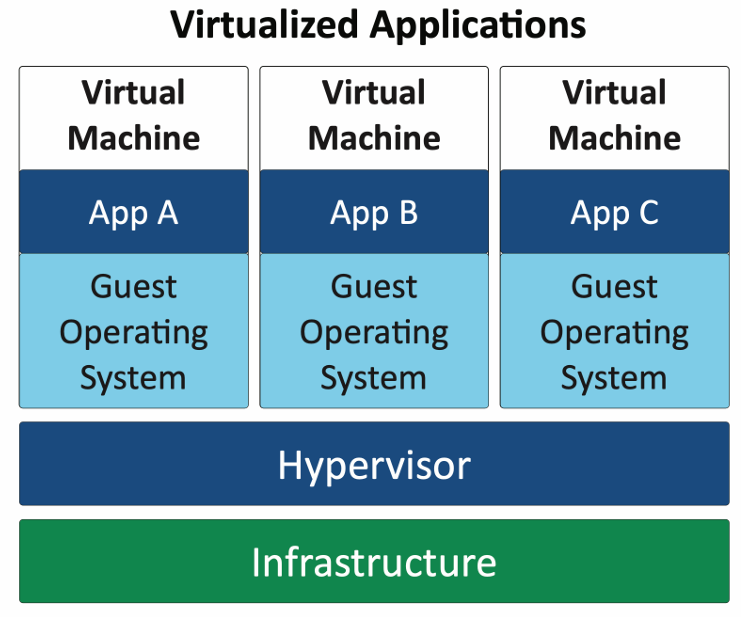
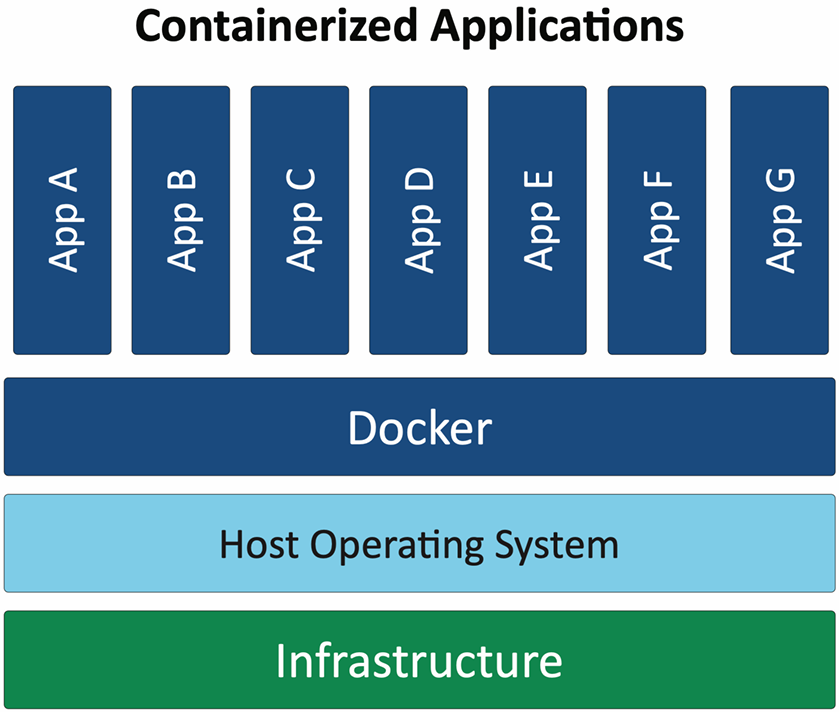
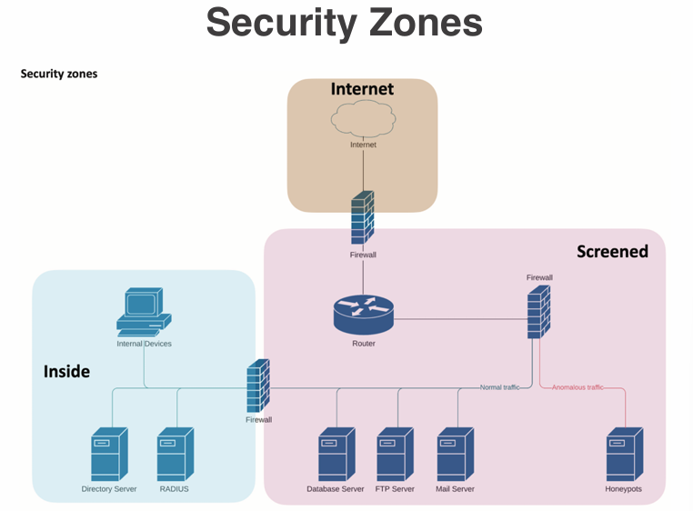

Date Taken: Fall 2025
Status: Work in Progress
Reference: LSU Professor Joseph Khoury, ChatGPT
Physical isolation, also known as air-gapping, is a security measure that involves separating a computer or network from unsecured networks, such as the public internet. This method is often used to protect sensitive information and critical systems from cyber threats. By physically isolating the system, it becomes significantly more difficult for unauthorized users to access the data or compromise the system.
Physical segmentation involves dividing a network into smaller, isolated segments using physical devices such as switches and routers. This approach enhances security by limiting the spread of potential threats and controlling access to sensitive areas of the network. Each segment can have its own security policies and controls, making it easier to manage and protect the overall network.
Logical segmentation involves dividing a network into smaller, isolated segments using software-based methods such as Virtual Local Area Networks (VLANs). This approach allows for greater flexibility and easier management compared to physical segmentation. VLANs enable network administrators to group devices logically, regardless of their physical location, and apply specific security policies to each group.
Virtual Local Area Network (VLAN). Separated logically instead of physically. Cannot communicate between VLANs without a Layer 3 device/router
Software-Defined Networking (SDN) is an approach to networking that separates the control plane from the data plane, allowing for centralized management and programmability of the network. SDN enables network administrators to dynamically configure and manage network resources, improving agility and efficiency. This approach also enhances security by allowing for more granular control over network traffic and policies.
Attacks can occur at various points within a network infrastructure, including endpoints, servers, network devices, and communication channels. It is essential to implement comprehensive security measures across all layers of the network to protect against potential threats. This includes using firewalls, intrusion detection systems, encryption, and regular monitoring to identify and mitigate risks.
On-premises security refers to the protection of IT infrastructure and data that is hosted within an organization's own facilities. This approach requires the organization to implement and manage its own security measures, including physical security, network security, and data protection. On-premises security can provide greater control over sensitive information but also requires significant resources and expertise to maintain.
Centralized security involves managing and controlling security measures from a single, central location. This approach allows for consistent policies and easier oversight but can create a single point of failure. Decentralized security, on the other hand, distributes security responsibilities across multiple locations or teams. This can enhance resilience and responsiveness but may lead to inconsistencies in security practices.
Virtualization is the creation of virtual versions of physical computing resources, such as servers, storage devices, and networks. This technology allows multiple virtual machines (VMs) to run on a single physical machine, optimizing resource utilization and improving scalability. Virtualization also enhances security by isolating VMs from each other, reducing the risk of cross-contamination in the event of a security breach.

Application containerization is a lightweight form of virtualization that packages an application and its dependencies into a single container. Containers share the host operating system's kernel but run in isolated user spaces, allowing for efficient resource utilization and rapid deployment. This approach simplifies application management and enhances security by isolating applications from each other and the host system.

The Internet of Things (IoT) refers to the network of interconnected devices that can communicate and exchange data over the internet. These devices, which include everything from smart home appliances to industrial sensors, often have limited security features, making them vulnerable to cyberattacks. Securing IoT devices requires a comprehensive approach that includes strong authentication, regular software updates, and network segmentation to protect against potential threats.
SCADA and ICS are systems used to monitor and control industrial processes, such as manufacturing, energy production, and water treatment. These systems often operate in critical infrastructure environments and require robust security measures to protect against cyber threats. Securing SCADA/ICS involves implementing network segmentation, strong access controls, and continuous monitoring to detect and respond to potential security incidents.
A Real-Time Operating System (RTOS) is an operating system designed to handle real-time applications that require precise timing and predictable response times. RTOSs are commonly used in embedded systems, industrial control systems, and other applications where timely processing of data is critical. Securing RTOS-based systems involves implementing robust access controls, regular software updates, and monitoring to ensure the integrity and availability of the system.
Embedded systems are specialized computing systems that are designed to perform specific functions within larger systems. These systems are often found in devices such as medical equipment, automotive systems, and consumer electronics. Securing embedded systems requires a comprehensive approach that includes strong authentication, regular software updates, and network segmentation to protect against potential threats.
High availability refers to the design and implementation of systems that are resilient and can maintain continuous operation with minimal downtime. This is achieved through redundancy, failover mechanisms, and robust infrastructure. High availability is critical for mission-critical applications and services that require uninterrupted access, such as financial systems, healthcare applications, and communication networks.
Availability is a key aspect of information security that ensures systems and data are accessible to authorized users when needed. This involves implementing measures such as redundancy, failover mechanisms, and regular maintenance to minimize downtime and ensure continuous operation. High availability is particularly important for critical applications and services that require uninterrupted access.
Resilience in information security refers to the ability of systems and networks to withstand and recover from cyberattacks, failures, or other disruptions. This involves implementing robust security measures, redundancy, and disaster recovery plans to ensure that critical systems can continue to operate and recover quickly in the event of an incident. Resilience is essential for maintaining the integrity, availability, and confidentiality of data and systems.
Cost is a significant factor in information security, as organizations must balance the need for robust security measures with budget constraints. Implementing effective security solutions often requires investments in technology, personnel, and training. Organizations must carefully evaluate the cost-benefit of various security measures to ensure that they provide adequate protection without exceeding budgetary limits.
Responsiveness in information security refers to the ability of an organization to quickly and effectively respond to security incidents and threats. This involves having well-defined incident response plans, trained personnel, and the necessary tools and technologies to detect, analyze, and mitigate security incidents. A responsive security posture is essential for minimizing the impact of cyberattacks and ensuring the continued protection of systems and data.
Scalability in information security refers to the ability of security measures and systems to adapt and grow in response to changing organizational needs and threats. As organizations expand their operations, add new technologies, or face evolving cyber threats, their security infrastructure must be able to scale accordingly. This involves implementing flexible and modular security solutions that can accommodate increased workloads, new applications, and emerging risks without compromising overall security posture.
Ease of deployment in information security refers to the simplicity and efficiency with which security measures and systems can be implemented within an organization's IT infrastructure. A security solution that is easy to deploy minimizes the time, effort, and resources required for installation and configuration, allowing organizations to quickly enhance their security posture. This is particularly important in dynamic environments where rapid deployment of security measures is necessary to address emerging threats and vulnerabilities.
Risk transference in information security refers to the practice of shifting the responsibility for managing certain risks to a third party, such as an insurance provider or a cloud service provider. This approach allows organizations to mitigate potential financial losses and operational disruptions associated with security incidents by transferring the risk to an entity better equipped to handle it. Risk transference is often used in conjunction with other risk management strategies, such as risk avoidance and risk mitigation, to create a comprehensive security posture.
Ease of recovery in information security refers to the ability of an organization to quickly and effectively restore systems and data following a security incident or disruption. This involves having well-defined disaster recovery plans, backup strategies, and recovery procedures in place to minimize downtime and data loss. An organization with a high ease of recovery can rapidly return to normal operations, reducing the impact of security incidents on business continuity and overall security posture.
Patch availability in information security refers to the accessibility and timely release of software updates and patches that address vulnerabilities and security issues in applications and systems. Regularly applying patches is essential for maintaining the security and integrity of IT infrastructure, as unpatched vulnerabilities can be exploited by attackers to gain unauthorized access or disrupt operations. Organizations must establish effective patch management processes to ensure that patches are promptly evaluated, tested, and deployed across their systems.
Inability to patch refers to situations where organizations are unable to apply necessary software updates and patches to their systems and applications. This can occur due to various reasons, such as compatibility issues, lack of resources, or operational constraints. The inability to patch can leave systems vulnerable to cyber threats, as unpatched vulnerabilities can be exploited by attackers. Organizations must develop strategies to address patching challenges, such as implementing compensating controls or prioritizing critical systems for patching.
Power is a critical consideration in information security, as it directly impacts the availability and reliability of IT systems and infrastructure. Ensuring a stable and uninterrupted power supply is essential for maintaining system uptime and preventing data loss or corruption. Organizations must implement robust power management strategies, including uninterruptible power supplies (UPS), backup generators, and redundant power sources, to mitigate the risks associated with power outages and fluctuations.
Compute refers to the processing power and resources required to run applications and services within an organization's IT infrastructure. Adequate compute capacity is essential for ensuring optimal performance, scalability, and responsiveness of systems. Organizations must carefully evaluate their compute needs based on factors such as workload demands, user requirements, and future growth projections to ensure that they have sufficient resources to support their operations effectively.
Device placement refers to the strategic positioning of IT devices and infrastructure components within an organization's physical and network environments. Proper device placement is essential for optimizing performance, security, and manageability of systems. Organizations must consider factors such as network topology, physical security, environmental conditions, and accessibility when determining the optimal placement of devices to ensure efficient operation and protection against potential threats.
Security zones are logical or physical segments within a network that are designed to enforce specific security policies and controls. By dividing a network into distinct zones, organizations can better manage access, monitor traffic, and contain potential threats. Common security zones include the internal network, demilitarized zone (DMZ), and external network. Each zone has its own security requirements and measures to protect against unauthorized access and cyber threats.

The attack surface refers to the totality of points within a system or network that are vulnerable to cyberattacks. This includes all hardware, software, and network components that can be exploited by attackers to gain unauthorized access or disrupt operations. Reducing the attack surface is a critical aspect of information security, as it minimizes the potential entry points for attackers and enhances the overall security posture of an organization.
Connectivity refers to the ability of systems and devices to communicate and exchange data within a network or across networks. Reliable and secure connectivity is essential for ensuring seamless access to applications, services, and resources. Organizations must implement robust networking infrastructure, including firewalls, routers, and switches, to facilitate secure and efficient connectivity while protecting against potential cyber threats.
Failure modes refer to the various ways in which systems or components can fail, leading to disruptions in operations or security breaches. Understanding potential failure modes is essential for developing effective risk management strategies and ensuring system resilience. Organizations must identify and analyze possible failure scenarios, implement preventive measures, and establish contingency plans to mitigate the impact of failures on business continuity and security.
Device connections refer to the various methods and protocols used to link devices within a network, enabling communication and data exchange. Properly managing device connections is crucial for maintaining network security and performance. Organizations must ensure that connections are secure, authenticated, and monitored to prevent unauthorized access and potential cyber threats.
An Intrusion Prevention System (IPS) is a network security technology that monitors network traffic for suspicious activity and takes proactive measures to prevent potential threats. Unlike Intrusion Detection Systems (IDS), which only detect and alert on potential intrusions, IPS can actively block or mitigate threats in real-time. IPS systems use various techniques, such as signature-based detection, anomaly detection, and behavior analysis, to identify and respond to malicious activities.
A jump server, also known as a jump box or bastion host, is a secure intermediary server that provides controlled access to a private network from an external network. Jump servers are typically used to enhance security by isolating sensitive systems and limiting direct access to them. Users connect to the jump server first, and then use it to access other systems within the private network. This approach helps to reduce the attack surface and provides an additional layer of security.
A proxy server acts as an intermediary between a user's device and the internet. It helps to enhance security, improve performance, and control access to resources. Proxy servers can be used to anonymize internet traffic, filter content, and cache frequently accessed data to reduce bandwidth usage. They are commonly employed in corporate networks to enforce security policies and monitor user activity.
A forward proxy is a type of proxy server that sits between a client and the internet, forwarding requests from the client to the desired web servers. It is commonly used to provide anonymity, control access to resources, and cache content for improved performance. Forward proxies are often employed in corporate environments to enforce security policies and monitor user activity.
A reverse proxy is a type of proxy server that sits between web servers and clients, forwarding client requests to the appropriate backend servers. It is commonly used to distribute traffic, improve performance, and enhance security. Reverse proxies can also provide SSL termination, load balancing, and caching. They are often employed in large-scale web applications to optimize resource utilization and protect backend servers.
An open proxy is a proxy server that is accessible to any user on the internet, allowing them to route their traffic through it. Open proxies can be used for anonymity and bypassing content restrictions, but they also pose significant security risks. Malicious actors can exploit open proxies to conduct cyberattacks, distribute malware, or engage in illegal activities. As a result, open proxies are often blocked by websites and organizations to protect against potential threats.
An application proxy is a specialized type of proxy server that operates at the application layer, handling specific protocols and services. It acts as an intermediary for requests from clients seeking resources from servers, providing additional security and control over application-level traffic. Application proxies can perform functions such as content filtering, authentication, and logging, making them useful for enforcing security policies and monitoring user activity.
A load balancer is a network device or software application that distributes incoming network traffic across multiple servers to ensure optimal resource utilization, improve performance, and enhance reliability. By evenly distributing workloads, load balancers help prevent server overloads and ensure high availability of applications and services. Load balancers can operate at various layers of the OSI model, including the transport layer (Layer 4) and the application layer (Layer 7), providing different levels of control and functionality.
Active/active load balancing is a load balancing configuration where multiple servers are actively processing requests simultaneously. In this setup, incoming traffic is distributed evenly across all available servers, allowing for optimal resource utilization and improved performance. Active/active load balancing provides high availability, as the failure of one server does not impact the overall system's ability to handle requests, as other servers continue to operate.
Active/passive load balancing is a load balancing configuration where one server is actively processing requests while another server remains on standby, ready to take over in the event of a failure. In this setup, incoming traffic is directed to the active server, and if it becomes unavailable, the passive server is activated to handle the requests. Active/passive load balancing provides redundancy and ensures high availability, as the passive server can quickly take over without disrupting service.
Sensors and collectors are essential components of network security and monitoring systems. Sensors are devices or software applications that capture and analyze network traffic, system logs, and other data sources to detect potential security threats and anomalies. Collectors, on the other hand, aggregate and store the data collected by sensors for further analysis and reporting. Together, sensors and collectors provide organizations with valuable insights into their network activity, enabling them to identify and respond to security incidents effectively.
Port security is a network security feature that restricts access to network ports based on predefined criteria, such as MAC addresses or VLANs. By implementing port security, organizations can prevent unauthorized devices from connecting to the network, reducing the risk of security breaches and unauthorized access. Port security can be configured on switches and routers to limit the number of devices that can connect to a specific port, block unknown devices, and log security violations for further analysis.
EAP is an authentication framework frequently used in wireless networks and point-to-point connections. It provides a variety of authentication methods, such as token cards, smart cards, certificates, and public key encryption, allowing for flexible and secure authentication mechanisms.
IEEE 802.1X is a network access control protocol that provides an authentication mechanism for devices attempting to connect to a LAN or WLAN. It is commonly used in enterprise networks to enhance security by requiring devices to authenticate before gaining access to network resources. IEEE 802.1X works in conjunction with EAP to support various authentication methods, ensuring that only authorized users and devices can access the network.
IEEE 802.1X and EAP work together to provide a robust authentication framework for network access control. IEEE 802.1X serves as the protocol that governs the authentication process, while EAP provides the flexibility to use various authentication methods. This combination allows organizations to implement secure access controls for their networks, ensuring that only authorized users and devices can connect and access resources.
The universal security control refers to a comprehensive approach to managing and enforcing security policies across an organization's entire IT infrastructure. This concept emphasizes the importance of integrating various security measures, technologies, and processes to create a unified and cohesive security framework. By implementing universal security controls, organizations can enhance their overall security posture, streamline management, and ensure consistent protection against cyber threats.
Network-based firewalls are security devices that monitor and control incoming and outgoing network traffic based on predetermined security rules. They are typically deployed at the perimeter of a network to protect against external threats and unauthorized access. Network-based firewalls can be hardware appliances or software applications, and they operate by filtering traffic based on criteria such as IP addresses, port numbers, and protocols. By enforcing security policies, network-based firewalls help safeguard an organization's IT infrastructure from cyberattacks and data breaches.
A Unified Threat Management (UTM) or all-in-one security appliance is a comprehensive security solution that integrates multiple security functions into a single device. UTM appliances typically combine features such as firewall protection, intrusion detection and prevention, antivirus and anti-malware, content filtering, and virtual private network (VPN) capabilities. By consolidating these security functions, UTM appliances provide organizations with a simplified and cost-effective approach to managing their network security.
A Next-Generation Firewall (NGFW) is an advanced type of firewall that goes beyond traditional firewall capabilities by incorporating additional security features and technologies. NGFWs provide deep packet inspection, application awareness, and integrated intrusion prevention systems (IPS) to enhance network security. They are designed to address modern cyber threats and provide granular control over network traffic, allowing organizations to enforce security policies based on applications, users, and content.